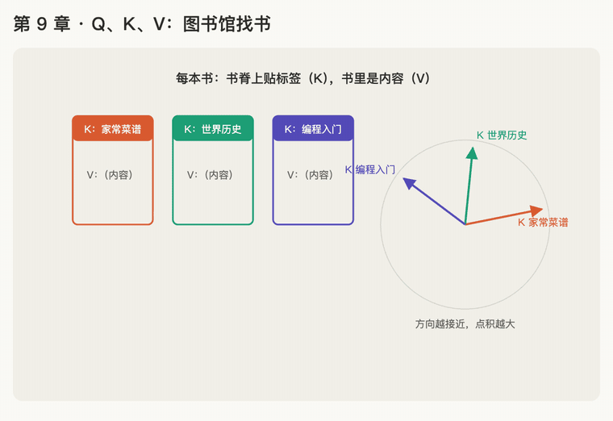

第 9 章 · Q、K、V 分别是什么
本章回答：公式里的 Q、K、V 是什么？为什么一个词要分出三个向量？
讲解日期：2026-10-26 · 上一章：第 8 章 除以 √d_k · 下一章：第 10 章 转换与矩阵
对应原文：materials/text/papers/attention-is-all-you-need-1706.03762.txt§3.2，L145–L162
本章缩写：Q / K / V = Query（查询）/ Key（键）/ Value（值）；\(d_k\)：k = key，每个 key 向量有几个数（64）；QK / OV circuit：Query–Key 线路（决定看谁）/ Output–Value 线路（决定拿什么）；softmax = soft（柔和的）+ max（取最大）：按大小分比例，不是只挑最大的；CS336 = Stanford 课程 CS 336（Computer Science 336，Language Modeling from Scratch）；代码里的名字（PyTorch、nn.Linear等）见附录"PyTorch 对照"。全部缩写见 附录 · 缩写与术语表
讲解
图书馆找书
想找一本讲做红烧肉的书：
| 是什么 | 例子 | |
|---|---|---|
| Q（Query，查询） | 你心里想找什么 | "我想找讲做红烧肉的书" |
| K（Key，键） | 每本书贴的标签 | 书脊上的"家常菜谱""世界历史""编程入门" |
| V（Value，值） | 每本书里面的内容 | 菜谱那本里的具体做法 |
找书三步，正好对应 attention：
- 拿需求（Q）和每本书的标签（K）比对，看哪本最对得上 → 点积打分
- 对得上的多看，对不上的少看 → softmax 分比例
- 真正带走的是内容（V），不是标签 → 按比例取信息
关键：用来比对的是标签（K），被拿走的是内容（V），两者不是同一个东西。 标签只要说明"我是讲什么的"，内容才是真正有用的信息。
回到"她"那句话
小明把苹果给了小红，因为她饿了。
- "她"的 Q：我在找"一个女性的人"
- "小红"的 K：我是"一个女性的名字"，和"她"的 Q 很对得上 → 分数高
- "小红"的 V：携带的具体信息（是谁、做了什么……），"她"要取走的就是这些
第 4 章的信息向量 [像女生的程度, 是人的程度] 就是 V；第 2 章拿"她"和各个词做点积，其实就是"她"的 Q 和每个词的 K 做点积。之前已经算过了，只是现在才起名字。
每个词都同时有 Q、K、V 三个向量：每个词既会去找别人（用 Q），也会被别人找（用 K、V）。三个向量都是从这个词本身的向量变换出来的，怎么变换见第 10 章。
动画演示：图书馆找书：Q 比对 K，带走 V

可交互版：animations/09-qkv.html（要能点按钮、拖滑块，需要用本地服务打开，见 animations/README.md"跑起来看"）。
怎么看：
- 每本书书脊上贴标签（K），书里是内容（V）；
- Q（想找红烧肉做法）和每个 K 做点积：方向越接近，分数越高；
- softmax 分比例，真正带走的是内容 V，不是标签；
- 换成句子："她"的 Q 找"一个女性的人"，小红的 K 最对得上，取走小红的 V；滑块：转动 Q 的方向，带走的内容跟着变。
练习与作答记录
题：在网上搜"红烧肉做法"。搜索框里打的字、每个网页的标题、网页的正文，分别对应 Q、K、V 哪个？
第 1 次作答："Q 是做法，K 是红烧肉，V 是做法内容。"
点评：V ≈ 网页正文 ✓。Q、K ✗：把搜索词"红烧肉做法"拆成了两半，分给了 Q 和 K。关键是谁的：Q 属于"去找的一方"（你），K 和 V 属于"被找的一方"（每个网页各有一份）。
第 2 次作答（提示"想想是谁写的"之后）："我自己写的，所以 Q 是我。" ✓（更精确：Q 是"我想找什么"，即搜索框里的整串字）
第 3 次作答："我要找做法是 Q，K 是红烧肉，V 是 5 个诀窍和历史由来。"
点评：仍把搜索词拆成"做法"和"红烧肉"分给 Q、K，并把网页标题当成了 V。卡点：搜索词和标题里都有"红烧肉"，所以把"共同的那个词"当成了 K。其实共同的词正是 Q 和 K 能对上（分数高）的原因；K 是每个网页自己的整条标题。改用"三个网页走一遍搜索三步"的具体例子重讲。
第 4 次作答（三个网页走一遍之后）："1 是后面内容，到底是做法还是由来，比关联性；第 3 步最后拿走标题 + 正文。"
点评：第 1 步的观察 ✓：A、B 都有"红烧肉"，真正拉开分数的是"诀窍 / 由来"这部分，比的就是关联性。但问题问的是"拿哪两样东西比"：搜索词 vs 每个网页的标题。第 3 步：现实里确实标题和正文都看到，这是类比和 attention 的差别。attention 里 K 和 V 是两个分开的向量，K 只用来打分，最后混合进来的只有 V。直接给出对应关系，改用新场景检验。
对应关系：搜索框里的字 = Q（我想找什么）；每个网页的标题 = K（我是讲什么的，用来比对）；每个网页的正文 = V（真正被取走的内容）。
迁移题：外卖 App 想吃"辣的面"，每家店有店铺标签和实际做出来的菜。"辣的面"、店铺标签、实际吃到的菜分别是 Q、K、V 哪个？
作答："Q 是我要找辣口味的面买外卖，K 是店铺标签，V 是实际的菜。" ✓ 在新场景里独立对上了。
小结
| 搜索 | 外卖 | 作用 | 是谁的 | |
|---|---|---|---|---|
| Q | 搜索框里的字 | "辣的面" | 说明我想找什么 | 去找的一方，一份 |
| K | 网页标题 | 店铺标签 | 和 Q 比对，算分数 | 被找的一方，每个各一份 |
| V | 网页正文 | 实际的菜 | 按比例被取走 | 被找的一方，每个各一份 |
Q 去问，K 来答"像不像"，V 是最后拿走的东西。
易错点：Q、K 是按"是谁的"分，不是把一句话拆成几段分；Q 和 K 里出现的共同词，是它们能对上（分数高）的原因。attention 里 K 只用来打分，最后混合进来的只有 V。
为什么 Q 和 K 要分成两个向量
题：为什么不让每个词只用一个向量，既当 Q 又当 K？
作答："因为意义不同，在不同场合下分别需要 Q、K，所以要有 2 个不同的。" ✓
补充： - "她"的 Q 是"我在找一个女性的人"，K 是"我是一个代词"："我要找什么"和"我是什么"本来就是两回事，一个向量装不下两种意思。 - 如果 Q = K，任何词和自己做点积都很大（自己和自己最像），每个词都会主要盯着自己看，attention 就失去了"去看别人"的作用。
本章复习卡片
R16 Q、K、V 分别是什么（见 review.md）
附录 · 延伸阅读
留给以后深入学习用，不影响本章主线。★ 是建议先读的。
- 本地论文的文本版在materials/text/papers/，表里的行号就是指这个文本版。
- CS336 handout 在cs336-spring2025/materials/text/cs336_spring2025_assignment1_basics.txt。
推荐阅读
| 读什么 | 读哪里 | 读它为了什么 |
|---|---|---|
| ★ Attention Is All You Need | §3.2，L145–L162 | 原文："把 query 和一组 key-value 对映射成输出" |
| ★ 3Blue1Brown, Attention in transformers, visually explained（神经网络系列） | 全集 | 动画演示 Q、K、V 各自在干什么 |
| Jay Alammar, The Illustrated Transformer | Self-Attention in Detail | Q、K、V 向量的图解 |
| Elhage et al. 2021, A Mathematical Framework for Transformer Circuits（https://transformer-circuits.pub/2021/framework/index.html） | QK circuit 与 OV circuit 部分 | 进阶视角：Q、K 一起决定"看谁"，V（和输出矩阵）决定"拿走什么" |
| Formal Algorithms for Transformers | Algorithm 3、Algorithm 4 | Q、K、V 的正式伪代码 |
数学原理
- 软查找 soft lookup：普通字典是"key 完全相等才取 value"；attention 是"每个 key 按相似度给一个比例，所有 value 按比例混合"。
- 为什么 Q、K 要分开：打分可以写成 \(\mathbf x_i^\top W^Q (W^K)^\top \mathbf x_j\)。中间这个矩阵一般不对称，所以"她看小红"的分数和"小红看她"的分数可以不一样。如果 Q、K 用同一个矩阵，两个方向的分数就被迫相等。
公式清单
| 公式 | 意思 |
|---|---|
| \(\mathbf q_i = \mathbf x_i W^Q,\ \mathbf k_i = \mathbf x_i W^K,\ \mathbf v_i = \mathbf x_i W^V\) | 同一个词变出三个向量 |
| \(s_{ij} = \mathbf q_i \cdot \mathbf k_j = \mathbf x_i W^Q (W^K)^\top \mathbf x_j^\top\) | 打分展开后的形式（双线性形式） |
| \(\mathbf o_i = \sum_j p_{ij} \mathbf v_j\) | 取信息只用 V |
PyTorch 对照：把本章的数字用代码算一遍
代码在仓库本地
transformer-deep-dive/solutions/chapter-code/ch09_qkv.py，配套测试tests/test_ch09_13.py（在线版不带代码文件，下面摘了关键几行）。Mac 上直接能跑，不需要 GPU：
bash cd transformer-deep-dive/solutions/chapter-code uv run python ch09_qkv.py
讲义 ↔ 代码：
| 讲义 | 公式 / 说法 | PyTorch 写法 | 跑出来 |
|---|---|---|---|
| Q 比对 K | 需求 · 每本书的标签 | K @ q |
[3.0, 0.0, 0.6] |
| 分比例 | softmax | torch.softmax(scores, -1) |
菜谱 0.877、历史 0.044、编程 0.080 |
| 带走 V | 按比例取内容 | p @ V |
[8.77, 0.44, 0.80]：主要是菜谱知识 |
| 换掉 V | 标签不变 | V.flip(0) |
比例不变，带走的东西变了 |
| 换掉 K | 内容不变 | K.flip(0) |
比例变了 |
关键几行：
def attend(q, k, v):
p = torch.softmax(k @ q, dim=-1) # 比对只用 k
return p, p @ v # 带走的是 v
代码里才看得到的：
- K 决定"看谁"，V 决定"拿什么"：只换 V，比例一位都不变；只换 K，比例跟着变。所以 K 和 V 要分成两张表、各学各的。
- 三个参数的顺序 (q, k, v)：PyTorch 自带的
F.scaled_dot_product_attention(q, k, v)也是这个顺序（第 12 章会用到）。
自己改一改：
- 把
Q改成 [0, 3]（想找历史书），比例和带走的内容怎么变？